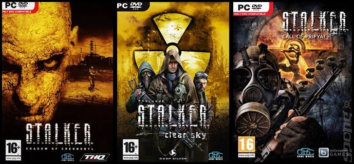

Игровой мир S.T.A.L.K.E.R. — вымышленная вселенная, в которой происходит действие компьютерных игр «серии S.T.A.L.K.E.R.», где в 2006 году на Чернобыльской АЭС произошла вторая катастрофа, по масштабам превзошедшая первую. Охватывает временной промежуток с 1986 до 2012 года. В общих чертах повторяет структуру реального мира, главным отличием является изменённый ход событий после аварии на Чернобыльской АЭС и наличие аномальных образований. Важным источником реалий вселенной S.T.A.L.K.E.R. послужил роман братьев Стругацких «Пикник на обочине», впрочем мир романа в игре значительно изменён. Эта игровая вселенная также послужила местом действия одноимённого межавторского цикла фантастических романов.